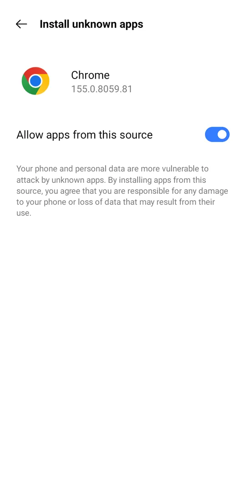

1
Download & install the APK
- On your Android phone, tap Download APK. If Chrome asks, tap Download anyway.
- Open the downloaded file from the notification, or from Files → Downloads.
- The first time, Android asks to allow installs from your browser. Tap Settings and switch on Allow apps from this source (or Allow from this source), then go back.
- Tap Install.
You can switch "Allow apps from this source" off again after installing.
